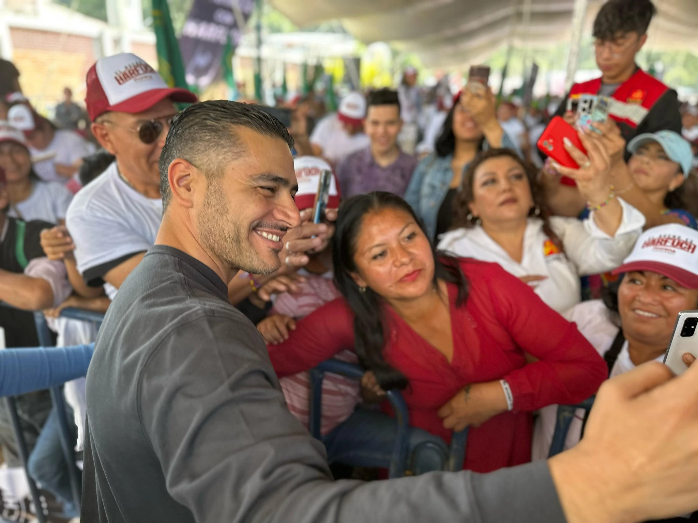

#ElBuenoEsHarfuch
"Los jóvenes son el corazón de la Ciudad, Son imaginación, crecimiento, creatividad y futuro, por eso les dejo mi compromiso para apoyarlos en su desarrollo, para escucharlos y seguir construyendo juntos ante cualquier adversidad."
"Si consolidamos la estrategia de seguridad, si erradicamos la desigualdad y garantizamos bienestar a mujeres, jóvenes, niñas, niños y adultos mayores, estoy seguro de que vamos a hacer de nuestra capital, la Ciudad más segura de Latam. Se puede y lo vamos a hacer."
